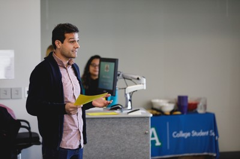

Fall 2017 ACA Scholarship Winner - giving the speech
Personal background: I am from Bucharest, Romania. I came to the United States on the 28th of November 2015.
One more year of school left then, I would like to move and live in Amsterdam.
Profesional background: Swimming instructor for more than 10 years in Romania.
I came to the States as an exchange student, and I worked in Montana,
Big sky resort, for two consecutive summers different jobs - Public Attendant, Laundry Attendant, Server.
Recently, I had an internship for the ITS Help Desk.
Primary computer platform: University of Bucharest, Romania,
Bachelor of Business and Public Administration
CSC 152-90: SAS - I want to know how to create and analyze data sets.
CTS 130-50: Spreadsheet - I would like to be able to design and print basic spreadsheets and charts.
DBA 112-51: Database Utilization - I want to know how a database works.
DBA 120-61: Database Programming - I want to learn SQL
WEB 110-01: Internet/Web Fundamentals - I want to learn how to create websites.
Something to remember me by: I am thinking every day to drop out of school.
Sometimes, I have the feeling that is just a waste of time and money.
There are so many ways to grow and develop as a person at a cheaper cost.
I just need the discipline of doing things.